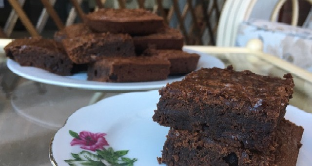

Chocolate Brownies
Ingredients:
-
140g of Plain Flour
-
20g of Cocoa Powder
-
200g of Sugar
-
80ml of Vegetable Oil
-
1 tsp of Vanilla Extract
-
200g of Dark Melted Chocolate
-
240ml of any Milk or Alternative
-
75g of Chocolate Chips

Method:
-
Preheat oven and line a square baking tin with baking or parchment paper.
-
In a large mixing bowl, add flour, cocoa powder and sugar and gently whisk to mix.
-
Add oil, vanilla, melted chocolate and milk. Mix with a wooden spoon until smooth and combined. Add chocolate chips and mix gently.
-
Tranfer brownie batter to prepared pan and bake for 25-30 minutes or until a skewer inserted in the middle comes out clean. Try not to over bake or brownies will turn cakey.
-
I recommend putting the brownies in the fridge for a few hours to firm up – they’ll also turn super fudgy.